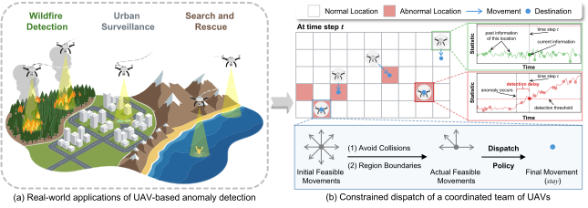
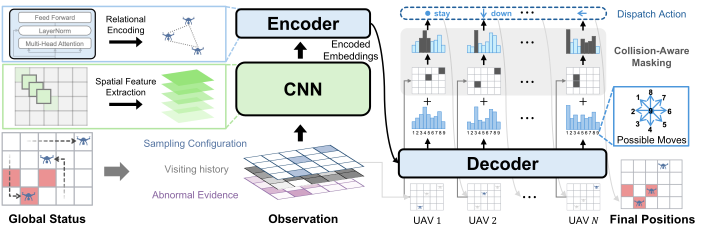
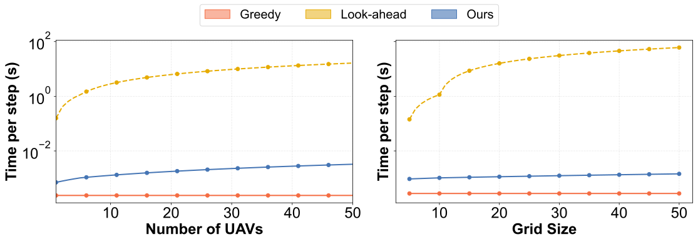
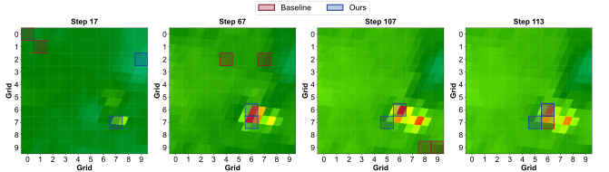

Projects / Coordinated control of robot and drone fleets
Learning Collision-Free Dispatch Policies for Route-Wise Decision-Dependent Anomaly Detection
Xin Xia1Chen Zhang2Kaibo Liu1
1 Industrial and Systems Engineering, University of Wisconsin-Madison2 Industrial Engineering, Tsinghua University
Advances in Neural Information Processing Systems (NeurIPS), 2026


A dispatch policy for UAV fleets that assigns moves sequentially, one UAV at a time, so joint moves are collision-free by construction and decoded in linear time, with guarantees on coverage, focusing, and detection delay. Validated on the Robotarium and on a wildfire reconstructed from satellite frames.
A small fleet has to monitor a large region
Each UAV observes only the location it visits, and anomalies may occur at unknown locations and times. Dispatch determines which locations are observed, and the observations update the evidence used for the next dispatch.
The goal is quickest detection under false-alarm control: keep the mean detection delay after a change (ARL1) small while the mean time to a false alarm (ARL0) stays above a required level. Moves are local, must stay inside the region, and must not collide.

DispatchPPO detects anomalies quickly when they occur at unknown locations and times
A fleet of UAVs monitors a 10×10 grid, and each UAV observes only the location it visits. At some time step, anomalies occur at a few locations. The time and the locations are unknown to the fleet, and an alarm is triggered once the detection statistic exceeds the threshold. Try it in three steps with the learned policy, which runs on a server.
- Normal Location
- Anomaly
- Movement
- Destination
At time step t = 0
DispatchNet samples a collision-free joint move without enumeration
The dispatcher selects a joint move for all UAVs subject to local mobility and collision-avoidance constraints. Parallel per-UAV sampling may produce infeasible moves, while enumerating all joint moves scales exponentially, as 9N for N UAVs. DispatchNet addresses this with an encoder-decoder architecture, autoregressive decoding and dynamic feasibility masking.

How the encoder, the decoder and the mask work
Encoder. Given the grid observation, a CNN block produces a spatial feature map. Each UAV forms a token from the feature at its current position, with identity and position embeddings. A Transformer encoder block then models inter-UAV interactions, such as congestion and mutual exclusion.
Autoregressive decoder. The decoder assigns moves sequentially, from UAV 1 to UAV N. For each UAV it scores the 9 local moves, using the embedding of this UAV and the move assigned to the previous UAV.
Dynamic feasibility mask. To prevent collisions during decoding, the mask reserves the destinations already assigned to earlier UAVs and the current positions of UAVs not yet decoded. This prevents both direct collisions and position swaps, and every UAV always retains at least the stay move. Each move is sampled from the masked distribution, so the joint move is collision-free and is generated in O(K+N) time for K locations and N UAVs.
Try the decoder in three steps.
- Score
- Reserved Location
- Destination
Illustration with an untrained DispatchNet on a 3×3 grid.
Coverage, focusing and detection delay are guaranteed
Learning has two stages. Stage I trains the policy offline in simulated environments with PPO and proxy rewards. Stage II executes it online, mixed with uniform exploration.
Persistent coverage
Every location is visited infinitely often, and no location is permanently ignored.
- Hit Rate
Illustration with 2 UAVs on a 4×4 grid. The number at each location is its hit rate, the fraction of time steps at which it is observed.
Evidence-based focusing
After the change, UAVs keep revisiting an isolated affected location whose evidence is locally dominant.
- Normal Location
- Anomaly
Illustration with 1 UAV on a 3×3 grid and exploration rate 0.1. The evidence increases by 2 at each observation of the affected location.
Corollary: clustered anomalies
As a corollary of evidence-based focusing, clustered anomalies are still detected; UAVs may move within the cluster.
- Normal Location
- Anomaly
Illustration with 1 UAV on a 4×4 grid and detection threshold 8. The evidence increases by 1 at each observation of an affected location.
Detection-delay bound
The mean detection delay is bounded, and a higher hit rate on the affected location gives a smaller bound.
- Normal Location
- Anomaly
Illustration with detection threshold 8. The statistic increases by 1 at each observation of the affected location.
Detection delay under false-alarm control
| Environment | 5×5 to 30×30 grids, 1 to 30 UAVs, 2 to 10 anomalies |
|---|---|
| Anomaly | mean shift Δ ∈ {1, 2, 3, 4}, starting at a time drawn uniformly from 5 to 50 |
| Metric | ARL1 at ARL0 = 370, 1,000 replications per setting |

DispatchPPO decides within a few milliseconds per time step, whereas Look-ahead needs seconds to about a minute as the fleet or the grid grows.
Per-step decision time against fleet size and grid size

Deployment on robots and on a real wildfire
Robotarium: 10 robots, 5 anomalies from t = 250 s

Cherrywood wildfire (2021): 2 UAVs on a 10×10 grid reconstructed from satellite frames

BibTeX
@inproceedings{
xia2026learning,
title={Learning Collision-Free Dispatch Policies for Route-Wise Decision-Dependent Anomaly Detection},
author={Xin Xia and Chen Zhang and Kaibo Liu},
booktitle={The Fortieth Annual Conference on Neural Information Processing Systems},
year={2026},
url={https://openreview.net/forum?id=s01jPERPlb}
}